坂根屋
島根県出雲市大社町入南622-2
坂根屋のどらやき（粒あん）。
更新日 : 2025/01/01
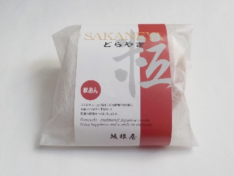
元旦から美味しいどら焼きを食べました。
ふかふかの衣につぶつぶがしっかりある餡子でした。丁寧につくられているんでしょうね。
今年は美味しいものをより多く食べれるよう、いろいろ考えて行動しようと思いました。
2020/09/22
坂根屋の出雲どらやき三種の柑橘あんって商品がありました。
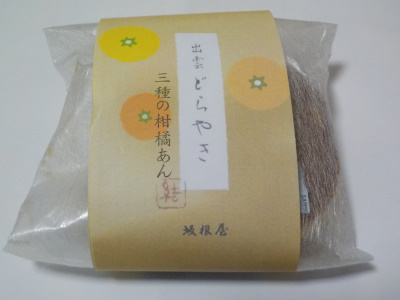
柑橘あんのどら焼きだそうです。
白あんにデコポン、河内晩柑、オレンジが入っています。ちょっとマーマレードっぽうあんこだなと思いました。
どら焼きっていろんな味のパターンがあるので、みかんがあってもいいかなって思いながら食べました。
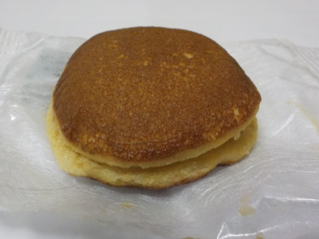
ちょっと小さい。味も控えめなので、甘党には物足りないかな。
2019/04/20
坂根屋の栗どら焼き
出雲地方では法事であんぱんをもらうのが定番でしたが、近頃はどら焼きが多いですね。
特に坂根屋さんのどら焼きをよく見ます。
店舗多くて買いやすいからかな。
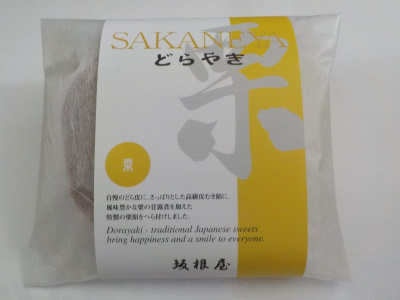
栗入りは包装が黄色いので法事にぴったりです。
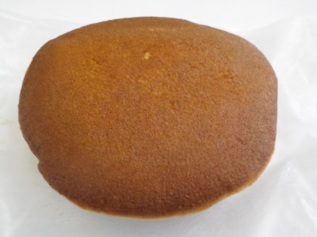
こしあんと栗でマイルドな味わいでした。
最近どら焼きって法事でもらうことが多いので、自分で買わなくなったな。
2018/12/30
坂根屋のよもぎどら焼き
ほんのりよもぎ味のどら焼きです。
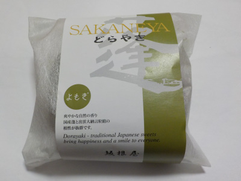
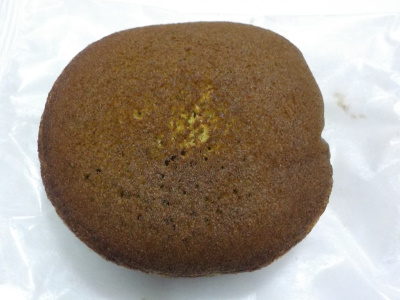
あんこのふぶつぶ食感がしっかりありました。
美味しいあんこでした。
2017/08/31
どら焼きは普通のタイプが一番好きかも。
坂根屋さんのどら焼きです。
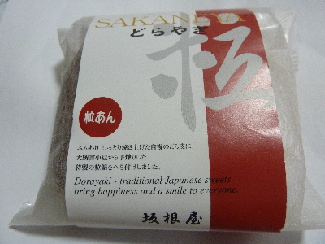
粒あんです。
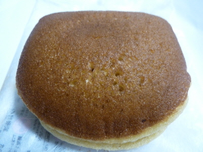
このごろは色んな味のどら焼きがあるので、普通のってなんか物足りない気がするんですが、食べてみると普通のが一番美味しい気がしました。
粒あん美味しいな。
2017/08/27
坂根屋のカラメルぶっせ
和菓子屋さんらしいパッケージですね。
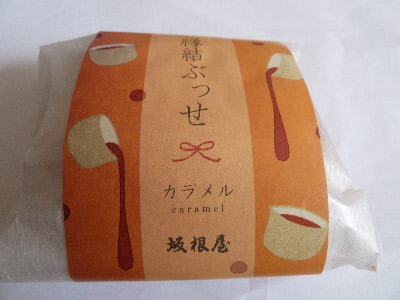
カラメルぶっせです。（ブッセひらがななんだ。）
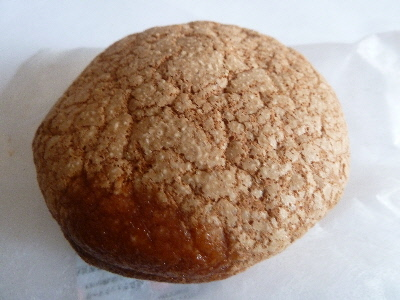
中に入ってるクリームがカラメル味だったのかな？
ブッセ自体がコンガリ焼けているので、全体的にカラメル感がありました。
ふんわり柔らかの、大きめぶっせでした。
2013/1/13
抹茶じゃなくてヨモギどら焼きです。
緑色のパッケージを見ると抹茶味を想像するんですが、これは違っていました。
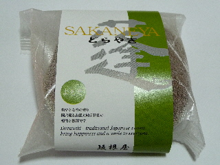
よもぎどら焼きです。
私はお茶と一緒にお茶味のお菓子をいただくのって少しくどくて抵抗があるんですが、よもぎなら大丈夫です。
他の商品も抹茶ばっかりじゃなくて、ヨモギ味になればいいのにって思いました。
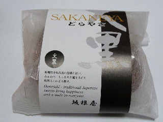
こちらは黒糖味の大黒どら焼きです。
他社の大黒まんじゅうや、黒糖薄皮まんじゅうより、どら焼きな分甘さがマイルドでした。
ちょっと変わったどら焼きですが、両方美味しかったです。
2011/09/03
坂根屋さんの青梅ゼリー
和菓子屋さんのゼリーです。甘くて濃い味かな？なんて思ったんですが、あっさりした味でした。
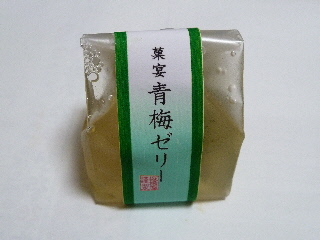
甘さ控えめだったので、青梅の味がして爽やかな感じでした。
夏にピッタリですね。
2011/01/23
坂根屋のロールケーキ
2010/04/06
坂根屋の一の谷春恋物語
20110/03/22
ゆめタウン出雲でお茶とお菓子をいただきました。
2008/06/15
坂根屋ラピタ店閉店
2008/02/23
坂根屋のだんだん団子
2007/5/31
坂根屋のどらやき
2007/1/26
坂根屋の黒生
2006/8/26
坂根屋のなまもも
2006/3/11
坂根屋の生ドラ
2006/3/1
坂根屋のいちご大福
【おいしいものを食べよう。】【たくさん寝よう。】
【ソロ活をしよう!】【季節感のあることをしよう。】【動画視聴はほどほどに。】【当サイトの全てのコンテンツは無断転載禁止です。】